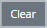
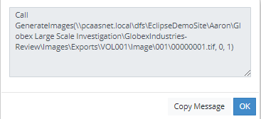

The System Manager opens. In the left pane of the System Manager, click System Logs.
System logs allow you to collect platform-level information about installed/registered components. Log information includes date/time, machine name, environment, component, type, and event status in a grid format. When the log row is clicked, detailed error information appears, if any. It is necessary to define your existing Elasticsearch endpoint in order to use the optional System Monitoring function. To learn more about this procedure, see
Complete the following steps to view log information.
The System Manager opens. In the left pane of the System Manager, click System Logs.

.To copy the Event column contents to the clipboard, click the desired log record to display the pop up Message dialog as shown in the following figure.

Click Copy Message to select the event text in the Message dialog. Paste the event text to the desired destination such as a text editor. Click OK to close the Message dialog when finished.
Related Topics